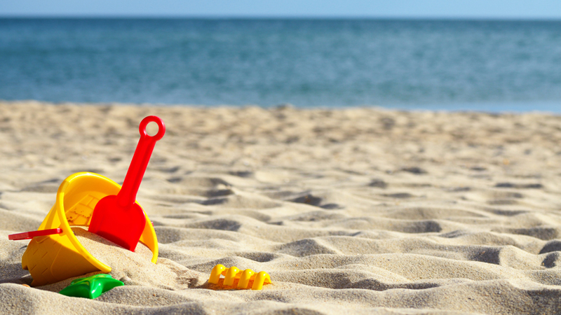

ENJOYTIME
With so much to see and so little time you would think three days may not be enough to explore the whole city of New York, however it is just enough time to see a lot of its most attractions.
HELLO SUMMER
The white sandy beach is amazing but be prepared to see a lot of other beachgoers. It is among the most popular beaches in Cyprus, but beautiful nonetheless.
IT'S SUMMERTIME
Time it right and you will be lucky enough to find a small island appear when the tide is out, allowing visitors to walk out and get an amazing look at the Nissi shore.
BEACHTIME
The resort of Protaras which is just around 10km away from Ayia Napa, is much quieter and geared more towards families and locals too.